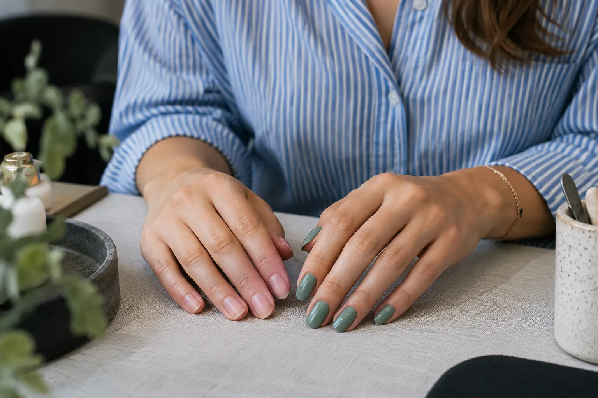

Manikiūras ir gelinis lakavimas: kuo skiriasi paslaugos?
Autorius: Madbeauty redakcija · Numatyta 2026 m. lapkričio 26 d. 16:00 (Lietuvos laiku)
Manikiūras ir gelinis lakavimas sprendžia skirtingas užduotis. Palyginkite nagų priežiūrą, dangą, nuėmimą ir vieno vizito darbų apimtį.

Manikiūras nusako nagų priežiūros darbus, o gelinis lakavimas – pasirinktą dangą. Tai gali būti atskiros paslaugos arba vienas bendras vizitas. Vien pavadinimas nepasako, ar įtrauktas senos dangos nuėmimas, nagų formavimas ar dizainas.
Priežiūra ir padengimas
Jei norite sutvarkytų natūralių nagų be naujos dangos, ieškokite manikiūro be lakavimo. Jei norite spalvotos gelinės dangos, patikrinkite, ar siūloma paslauga apima ir manikiūrą, ar tik dangos darbus. Pavyzdžiui, Vili Nails meniu šiuos variantus pateikia atskirai. Tai vieno teikėjo meniu pavyzdys, o ne visų salonų taisyklė.
Vienas ar kombinuotas pasiūlymas
Pasiūlymas „manikiūras su geliniu lakavimu“ gali apjungti priežiūrą ir dangą, tačiau verta perskaityti jo sudėtį. Taip pat nesupainiokite gelinio lakavimo su nago stiprinimu ar priauginimu: tai gali būti atskiri darbai. Room for Nails meniu atskiria natūralių nagų stiprinimą ir ilgio priauginimą. Palyginkite konkrečią darbų apimtį, o ne vien paslaugos pavadinimą.
Pasirinkimas esant senai dangai
Jei ant nagų jau yra danga, prieš užsakydami pasakykite apie ją ir paklauskite, ar jos nuėmimas įskaičiuotas, ar pasirenkamas atskirai. Meniu pavyzdžiuose nuėmimas ir dizainas gali keisti siūlomo vizito apimtį. Jei nežinote dangos pavadinimo, pakanka tai pasakyti ir, jei patogu, parodyti nagus.
- Norite tik natūralių nagų priežiūros – rinkitės manikiūrą be lakavimo ir patikrinkite, kokie priežiūros darbai įtraukti.
- Norite spalvotos dangos – ieškokite gelinio lakavimo arba manikiūro su geliniu lakavimu; išsiaiškinkite, ar įtrauktas ir manikiūras.
- Reikia ilgio ar papildomo stiprinimo – klauskite apie atskirą priauginimo ar stiprinimo paslaugą.
- Turite seną dangą – iš anksto pasitikrinkite nuėmimo sąlygas ir bendrą darbų apimtį.
Jei nagas pakitęs ar kelia rūpestį, kosmetinės dangos nenaudokite vien pakitimui paslėpti. Kosmetinė paslauga nepakeičia sveikatos problemos įvertinimo; kilus klausimų kreipkitės į sveikatos priežiūros specialistą. Daugiau apie nagų priežiūros ribas rašo Amerikos dermatologų akademija.
Prieš pasirinkdami palyginkite, ar paslaugos aprašyme nurodyta priežiūra, danga, senos dangos nuėmimas ir pageidaujamas papildomas darbas. Tada galėsite vertinti pasiūlymus pagal tai, ko iš tikrųjų norite.
Palyginkite procedūrų aprašus kataloge: Manikiūras ir Gelinis lakavimas. Konkrečią darbų apimtį, kainą ir prieinamumą tikrinkite prie realaus teikėjo pasiūlymo.
Šaltiniai
- Vili Nails · realių paslaugų variantai · www.treatwell.lt
- Room for nails · paslaugų apimtis · www.treatwell.lt
- AAD · manikiūro ir pedikiūro sauga · www.aad.org